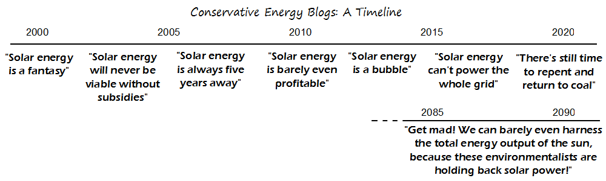

Comic JK 828
When I Feel Like It
⇤
<
?
>
⇥

⇤
<
?
>
⇥
Forum
.
RSS
.
Digg
.
Facebook
.
Reddit
.
Twitter
.
Stumbleupon
Enter your thoughts on number 828 here. Please, no spamming, trolling, phreaking, or becoming a Haberdasher type II civilization. Your mother is holding back solar power because she's so fat she blocks the sun. I'm a fan of tethered solar satellites. Not only can you send power down but bring materials up the cables. Win-Win. You can use giant space mirrors to keep the satellites going at night. I know it's a huge technical challenge but it would solve both our energy problems and the difficulty of getting everyday supplies into orbit. >Wow. That actually sounds really cool. >>Balloons. Picture twenty-odd zeppelins racked up side-by-side at an altitude of 30 kilometres or so. >>>It's not exactly easy, safe or efficient to beam concentrated energy rays through the atmosphere... >>>>It's safer than super-strong cables big enough to wrap around the earth. >>>>Best simcity catastrophe. And how do you convince the tethers to stay where they are instead of falling down? tethers up to the geostationary orbit? A bit unrealistic at the moment. >>>>>That part is easy. Many people have been working on the space elevator idea for a long time, and the only technical hurdle left to solve is finding a material strong enough to be used for the cable. >>>>>>And making enough of it. >>>>>>>The only thing holding back hovercars is discovering antigravity! >>>>>>>>Total understanding of the universe is almost here, we just need to discover a complete and fundamental theory of physics, then build a computer somewhat larger than the universe to run simulations!!! >>>>>>Use a tapered cable. The greatest tension is at the top of the cable where it's attached to the counterweight while the tension at the earth's surface is 0. >>>>And the trouble with microwave power transmission I forsee is: what happens when the system shifts a couple of degrees? Bye bye random city? >Since "Giant Space Mirrors" was George W Bush's idea to solve global warming I'm entirely skeptical of any idea that's anything like them... how often does this get vandalised <vandalism> by my small penis </vandalism>? >Once an hour or so. Except when it doesn't. <-which is twice per hour that it doesn't.DISREGARD THAT ETC....THIS SENTENCE AND THE PREVIOUS ONES ARE FALSE >>I'll post 2^11 backslashes so you can count how many times i't edited. (what? I'm proud to be the discoverer of something): //// Does a Haberdasher Type II civilization clothe their entire planet in a really natty tweed? >I really hope that's true... >Win! > +1 >I dont get it The problem is that, although its interesting, and solar cell tech has been improving vastly, we still run the problem of modern panel tech requiring a lot of space. Its viable on the one person/one household basis, where families out in the Southwest put them on their roof, but the primary problem is going to be efficient ways to transmit energy over long distances, which we still DON'T have. >Actually, they're developing them to put inside power-stations to make them more efficient! >> The fact that they can be implemented effectively on a small/individual scale means you don't NEED long-range transmission. This is also more efficient because it eliminates the line losses of long-range transmission. Not only that, in places like the southwest, sun availability synchs with demand - mostly because demand is so driven by air conditioning. It's not a complete solution, but it's a great supplemental one! >>>Long-range transmissions are still important to reduce energy storage capacity. Do you want an impact on the available power from a random cloudy weather? >>>>long range transmission is a (relatively) small problem. we have the tech (high voltage dc has been worked out for almost as long as we've been playing with electricity), and it's necessary to all sensible forms of green power (i'm sure i don't need to say it, but fusion isn't sensible. and fission is impossible political) >>>>>I don't see why it being politically sound means its not effective or the best choice. A;so, given that, at least for solar power concerns, there are places like Seattle where it rains 3 out of 5 days of the year, you need long range transmission in order to effectively implement green power. I also mention the transmission cause I remember a comic from a few months ago where he talked about the energy capabilities of hydroelectric dams, and the primary issue with his calculations was there wasn't an effective means to transmit all that energy to offset demand.